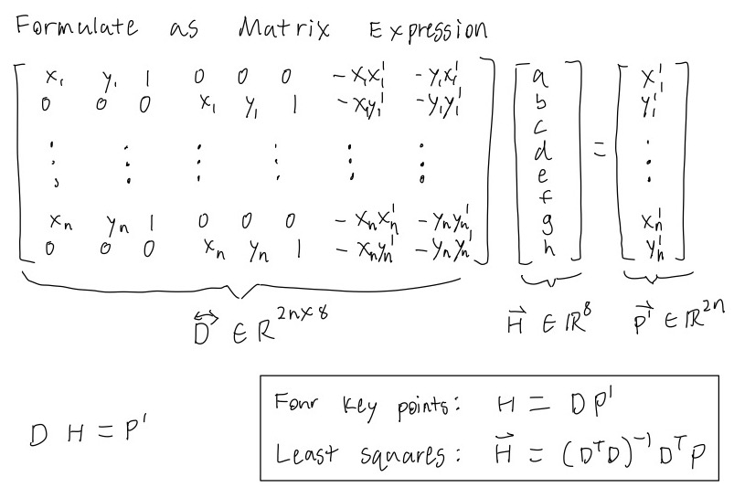

Our primary goal will be to project each image onto the same plane. To do this, we need to find homographies between photos. The steps we will take will be to first define corresponding key points in the images and calculate the homography matrix relating the two key points. To identify a unique homography, we need at least 4 points but if we use more than 4, we can apply least squares to find a generally good homography.

Example Scenario where least squares would be applied because there are 8 corresponding points in the two images
Image Rectification
With the ability to recover a homography that warps one set of key points into another set of key points, we can perform a cool feature called image rectification. The feature is as follows: if we there is something square or rectangular object in a photo, we can warp the photo such that the object will be a square or rectangle in the warped image. This is done by recovering the homography matrix that maps the corners of the object to the corners of a square. To specifc square I compare the image to has side lengths equal to the average width and height of the bounding box created by the selected four corners. Shown below are two examples of rectification.
Original
Original Labels with Key Points
Rectified
Original
Original Labeled with Key Points
Rectified
Mosaics
With the powerful tool of warping at our fingertips, we can now begin to create image mosaics. The general idea is the same as in image rectification except instead of warping a square object to be a square, we warp objects in image to have the same oriention and perspective as the same object in a second image. The first method I tried was warping one image to the plane of the second image. Pictured below was the first result I got:
The first attempt mosaic is actually not bad; the images are actually pretty well aligned. Unfortunately, the color change is not totally smooth so there are some obvious edges. The result above simply averaged the color of the two images in the overlap region. As a result, I wanted to come up with a better blending method.
Blending
As we saw above, we need a more robust approach to blend to images together than just averaging the overlap region. I came up with a blending method that made a gradually decreasing mask in the overlap region. The masks I create are pictured below:
Overlap Region Mask
Left Image Mask
Right Image Mask
The resultant image is calculated as follows: Blended_Image = left_image_mask * left_image + right_image_mask * right_image
Pictured above is the result of the new blending method. There are no more obvious edges but there are however some slightly unnatural shadows. In the future, I would like to try and implement 2-level blending where I blend the laplacian stacks of the two images independently.
Alternate Mosaic
In the first mosaics, I warped one image into the plane of another image which resulted in a asymmetric mosaic. I wanted to create a more symmetric mosaic by warping the two images to a "mean" plane between the two images. I did this by calculating the mean key points of the two sets of key points and then warping both images into the plane of the mean key points. An example result is pictured below:
Image Collection
Courtyard
Asymmetric Mosaic
Courtyard
Symmetric Mosaic
The Glade
Symmetric Mosaic
Cafe 3
Symmetric Mosaic
Courtyard
Rectified
Doe Library
Rectified
Section 2: Auto-Stitching
Automatic Key Point Detection
Harris Corners
The first step is to automatically detect key points. Often, key points are corners or specific dots on an image so my goal will be to detect corners. I detect corners using a Harris interest point detector. The general idea is that each pixel has a Harris strength score based on how corner-like a small patch centered at that pixel is. We then take each pixel with a locally maximum harris strength across 3x3 patches in the image. Finally, only the points above a certain threshold are kept.
Pictured on the left is the Harris corners overlayed the image. Orange dots are the key points with Harris strength threshold of 0.05.
Adaptive Non-Maximal Suppression
Harris corners returns way too many key points so we then we apply Adaptive Non-Maximal Suppression. This will reduce the number of key points while still maintaining a good spread across the image. This is done by calculating a constrained r value for each key point x. R is calculated using the following equation:
x_i is the key point we are calculating r_i for and x_j is every other key point. We then reduce the number of key points by taking the top n points with the highest values of r_i.
Pictured on the right is the top 250 key points returned from ANMS using a c_robust value of 0.9.
Feature Descriptors
Since we are automatically detecting key points in each image independently, we have no inherit knowledge about which points are corresponding points in two different images. Thus we need some algorithm to match key points between images. Firstly, we are going to need some more information in addition to point location. For this, we will make feature descriptors. The features descriptors I decided to use are 45x45 image patches centered at each key point and then downsampled to a 9x9 feature descriptor.
Image overlayed with an example key point and it's corresponding 45x45 image patch.
The normalized and downsampled feature descriptor from the patch pictured on the left.
**Note: these descriptors are not rotation or scale invariant but I am using images that have no change in zoom and hopefully minimal change in angles. However, if given more time, I think that adding rotational invariance would be very useful.**
Feature Matching
With feature descriptors, we can now start to compare features from two images. I opted to match features based off of squared distances between feature descriptors; I apply Lowe's trick to get only the best matches. Lowe's trick means that I take save each key points' two nearest neighbors and only save it as a match if the best neighbor is at least twice as close as the second nearest neighbor.
Matched Points for the left image of a mosaic Total Points: 52
Matched Points for the right image of a mosaic Total Points: 52
RANSAC
Unfortunately, even after all the previous point filtering and matching, it is still common for some outliers to make it through. As a result, we implement one final stage of filtering known as Random Sample Concensus (RANSAC). After Ransac is completed, we finally have a set of matched key points that we can use for homographies and then we can apply all the methods used in section 1.
RANSAC Algorithm: 1. Select four random feature pairs 2. Compute a homography between four pairs 3. Save set of inlier pairs from this homography ( Dist(p', Hp) < ε) 4. Repeat steps 1-3 N times 5. Return the largest set of inlier pairs
Matched Points for the left image after RANSAC (ε = 2, N = 1000) Total Points: 48
Matched Points for the right image after RANSAC (ε = 2, N = 1000) Total Points: 48
Final Results
Pictured below are a gallery of automatically stitched mosaics
Section 3: Bells and Whistles
Recursive Multi-image Mosaics
All the above mosaics were stitches of only 2 images. Stitching more than 2 images should be a trivial task because we can just another image to the stitched image to get a 3 image mosaic. However, appending one image at a time is very slow because the algorithm speed is largely dependent on the larger image. Thus appending one small image to one large image will take a long time. As a result, I wrote a recursive algorithm to stitch together an array of images. Additionally, my algorithm should in theory stitch all the images into the average plane.
Recursive Stitch Algorithm Pseudocode:
planar_mosaic_recursive(img_arr) if len(img_arr) == 1: return img_arr[0] n = len(img_arr) left_img = planar_mosaic_recursive(img_arr[:n//2]) right_img = planar_mosaic_recursive(img_arr[n//2:]) return stitch_and_blend(left_img, right_img)
Three Image Stitch with Recursive Algorithm
The algorithm produces good results for 3-4 image stitches but unfortunately fails for stitches of images with more than 4 images. Fortunately, the problem is not in the algorithm, but in the fact that we are working with planar images. Projecting onto a plane means we can only, in theory, have a view of 180-degrees. As a result, when we try to include images that span more than 180 degrees, our stitching algorithms break down. However, we can avoid this problem if we project the images onto a cylinder instead of a plane.
Cylinder Projection
One of the first features I wanted to do was to project onto a cylinder. This is because on a cylinder, we can easily warp multiple images and create 360 degree view mosaics. My methodology for creating cylinder mosaics was to first project each image onto a cylinder and then calculate homographies on the projected images. With a small edit in the above recursive stitching algorithm, we can stitch together a series on images on the cylindrical plane.
Mathematics
Coordinates of unwrapped cylinder: (x_cyl, y_cyl) Coordinates of cylinder: (theta, h) Coordinates of planar image: (x, y) Planar image center: (x_c, y_c)
The above relationships provides us a way to warp between cylinder projection images and planar images. Pictured on the right is a cylindrical projection with f=700
360-Degree Cylinder Mosaic
360 Glade
Cropped (F = 700)
360 Glade
Uncropped (F=700)
360 Doe
Cropped (F = 750)
360 Doe
Uncropped (F=750)
Two-band Blending
All stitches beforehand used single-band blending but I noticed that this made things that did not line up perfectly relatively obvious. This was most apparent in the courtyard mosaics. As a result I tried two-band blending. I performed this by creating a 2 level laplacian stack of the two images and then blending the low frequencies and simpling averaging high frequencies.
Single Band Blending
Two Band Blending
This produced relatively good results except for a white edge phenoma that I did not have a chance to fix yet. The issue was that I had build the stack off of a pre-warped image so the algorithm treats the image edges as a high-frequency edge even though there is no edge. If I had more time, I would implement the laplacian stack before the warp to prevent this edge artifact.
Conclusion
Overall, this project was one of the most fun and also most time consuming. At a high-level, all the algorithms make a lot of sense but when it comes to the nitty-gritty actual array/image indexing and interpolating, it gets confusing very quickly. Nevertheless, I enjoyed this project a lot.
If I had more time, somethings I would definitely want to implement are rotation invariant descriptors and make mosaics that stitch vertically in addition to horizontally. I also would have liked to warp images into another image such as pasting an image onto a TV in another image.